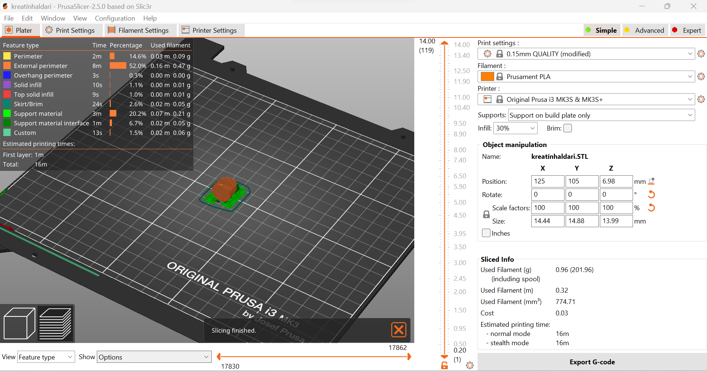
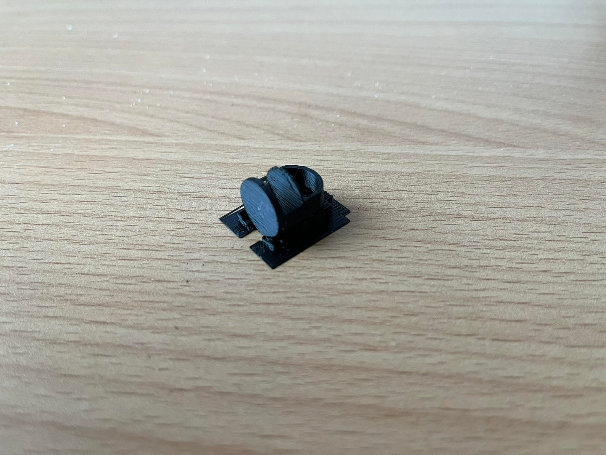
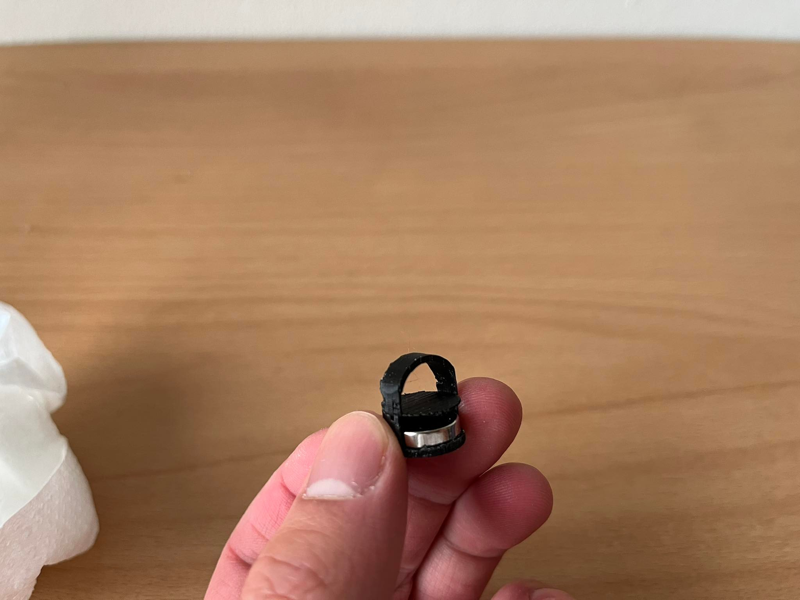

3D prentun og 3D skönnun
Hönnun á skeiðhaldara fyrir kreatínið mitt
Það sem ég ákvað að 3D prenta var einhverskonar haldara fyrir skeiðina mína í kreatínið mitt. Ástæðan fyrir því er að ég var þreyttur á að þurfa að róta í kreatín dolluna mína til að ná í skeiðina. Kreatín duftið myndi bæði fara á fingurnar mínar og það var pirrandi að þurfa að leita að skeiðinni.
Kröfurnar sem ég setti fyrir sjálfann mig var að skeiðinn þarf að vera í dollunni, það þarf að vera hentugt að ná í skeiðinna og það þarf að vera auðveld að færa haldarann frá dollu til dollu þar sem kreatínið getur klárast og ef ég kaupi aðra dollu þarf ég ekki að hella öllu kreatín duftinu í dolluna með haldaranum.
Hönnuninn sem ég kom upp með var haldari sem festist í vegg dollunar með seglum. Ég byrjaði að kaupa 2 12mmx3mm segla.

Næst notaði ég Solidworks til að hanna haldarann. Hönnuninn sem ég kom upp með má sjá á myndinni hér að neðan.
Þessi hönnun mjög hentug þar sem það er mjög auðvelt að ná í skeiðinna og af því hún er mjög lítil þá tekur 3D prentuninn enga stund.
3D prentun
Prentarinn sem ég ákvað að nota var Prusa MK3. Til að geta prentað þurfti ég að niðurhlaða Pursaslicer sem breytir .stl skrám í g-kóða sem prentarinn skilur. Næst gerði ég .stl skrá af haldaranum og færði yfir í Prusaslicer. Þar gat ég ákveðið hverskonar stuðning ég var með og hvernig hluturinn er prentaður. Ég gerði 30% Infill og supports on buildplate only og ýti á slice takkann. Því næst tók ég sd-kortið sem var í prentaranum sjálfum og setti í tölvuna mína. Þá gat ég vistað g-kóðann frá tölvunni minni yfir í sd-kortið og svo setti ég það aftur í prentarann.
Þetta er niðurstaðan
 
Vandamál
Ég þurfti að prenta kreatínhaldarann 3 sinnum þar sem opið fyrir segulinn var ekki nógu stórt. Kemur í ljós að plastið stækkar um 3% í prentuninni sjálfri. Þannig ég stækkaði opið um 0.5mm sem var gott fit. En þá fattaði ég að boginn sem heldur skeiðinni sjálfri er nákvæm breidd skeiðinnar þannig ég stækkaði og lengdi hann.
3D skönnun
Hluturinn sem ég ákvað að 3D skanna er dnd figúrína sem ég málaði fyrir löngu.
Ég notaði Scaniverse sem er app í símanum til að skanna hlutinn þar sem flestir námsfélagar mínir mældu með því forriti. Til að byrja skanna valdi ég new scan>small object. Hvernig forritið virkar er að það notar bæði lidar skannan sem er innbyggður í símanum og myndavélina til að skanna. Það sem mér finnst Scaniverse gerir betra enn önnur forrit er að það tekur upp myndband í stað þess að einstaklingurinn þurfi að taka ótal myndir.
Niðurstöður
Myndbandið hér fyrir neðan er niðurstaðan.
Tímatafla
| Verkefnihluti | Skýring | Tími |
|---|---|---|
| 3D hönnun | Hönnun og teikning | 2 klst |
| Prufa | 3D prent prufa | 1 klst |
| 3D Prentun | 3D prentun á hlutnum | 1 klst |
| 3D Skanna | 3D skanna hlut | 1 klst |
| Skrásetning | Skrásetning á vefsíðu | 3 klst |
| 8 klst |
Verkefnið tók mun minni tíma en ég bjóst við en það er út af því að hluturinn sem ég 3d prentaði var mjög lítill og því tók mjög stuttan tíma að 3D prenta. Ásamt því var ég búinn að fá ráð hvaða forrit ég ætti að nota fyrir 3D skönnunina. Annars gekk verkefnið mjög vel og ekki mikil vandamál eins og í fyrra verkefninu.